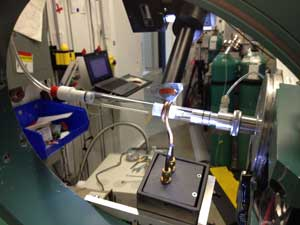
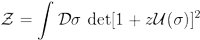
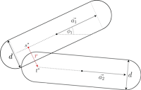

Andrew C. Loheac, Ph.D.
Analytical Consultant, SAS Institute
Computational Physicist, University of North Carolina at Chapel Hill
Research in Computational Physics
I have been involved in several research projects spanning different disciplines in physics throughout my undergraduate, graduate, and post-graduate career. The majority of my research interests lie in the application of computational techniques to the study of dynamical physical systems.
Graduate Research
I completed my Ph.D. in Department of Physics and Astronomy at the University of North Carolina at Chapel Hill. In spare time, am continuing to work with Prof. Joaquín Drut studying the thermodynamic properties of quantum systems using a variety of computational and numerical techniques.
We are currently:
High-Order Perturbation Theory and Complex Langevin Techniques
The sign problem is a signal-to-noise issue which plauges a vast number of interesting physical systems, and prevents conventional Monte Carlo techniques from accessing the properties of such systems. As such, we have been developing a variety of analytic and numerical tools which avoid or reduce the sign problem in certain situations. Particularly, we developed a computational technique to analytically compute a high-order perturbative expansion on the lattice, and we also adapted complex Langevin methods to work in the context of computing particular observables for atomic systems. These techniques eventually allowed us to study the polarized Fermi gas at unitarity in three spatial dimensions, an important system for ultracold atomic physics.
Unpolarized and Polarized Interacting Fermi Gases
Much of my early work in the group focused on characterizing the thermodynamic properties of one-dimensional systems of unpolarized and polarized fermions at finite temperature. The unpolarized case, where the population of spin-up and spin-down fermions are equal, is free of a sign-problem and relatively straightforward to study once the relevant scales are well understood. The polarized case, where the system has a non-vanishing net spin magnetization, on the other hand introduces a sign problem which we have overcome by moving to the complex plane: either by introducing an imaginary chemical potential (which is analytically continued to the real axis), or applying complex Langevin (known as stochastic quantization in the context of real fields) with a regulator included in the action.
You can find more about our group here, as well as see a list of my own publications here.
Undergraduate Research
|  |
Investigation of Oxygen Interactions with the Au(001) Single Crystal Facet I spent just over a year working with Dr. Michael Pierce in the X-Ray and Surface Science Laboratory at the Rochester Institute of Technology studying the interactions of molecular oxygen and carbon monoxide with the top atomic monolayer of the Au(001) single crystal facet. At particular partial pressures and temperatures, oxygen exposure causes the surface layer to lift, or reconstruct, from a hexagonal phase to a (1x1) bulk truncated state in a reproducible and reversible fashion. We were able to map out a pressure-temperature phase diagram of the phase transition and measure associated activation energies using in-situ surface X-ray diffraction at the Advanced Photon Source at Argonne National Laboratory. |
|  |
Thermodynamics of Strongly Coupled Matter I spent the summer of 2013 at the University of North Carolina at Chapel Hill as part of the Computational Astronomy and Physics Research Experiences for Undergraduates (NSF REU) program. I worked with Dr. Joaquin Drut (whom I am working with now as a graduate student) using quantum Monte Carlo techniques to calculate the equation of state of strongly coupled fermions using a high-order virial expansion. |
|  |
Molecular Dynamics Simulations of Geometrically Cohesive Granular Materials with CUDA My first experience at combining my strengths in algorithm design and physics arose during a research project with Prof. Scott Franklin at the Complex Systems and Granular Materials Laboratory at RIT. Beginning in my freshman year and continuing into the following summer, I developed a two-dimensional simulation in MATLAB to study the rheology of geometrically cohesive granular materials using a spherocylinder-based geometry. We "glued" spherocylinders together to study the dynamics of U-shaped particles, or staples, and flocking of active triangular particles. In order to study larger systems quickly, I spent a summer porting the simulation to a CUDA C++ implementation, a platform for running massively parallel scientific computations on Graphics Processing Units (GPUs). This improved simulation allowed us to study bulk properties of these materials by compressing and shearing large systems of spherostaples to see how they react to external agents. |
Funding
I was supported by a Graduate Research Fellowship from the National Science Foundation through my graduate career, which offers a stipend and full tuition coverage for three years. During my final year I was supported by a Dissertation Completion Fellowship.